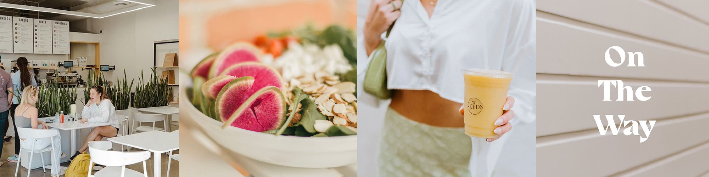

About Us
Just Fresh. No Junk.
Our calling is to make brunch part of a healthy lifestyle. At Cafe Clementine, we kick brunch up a notch. Our food is made using fresh and nutritious ingredients souced from local California farmers. That means our smoothies, paninis, soups and salads are made without fillers or crap! Stop by for a healthy brunch at our location in Venice Beach.
